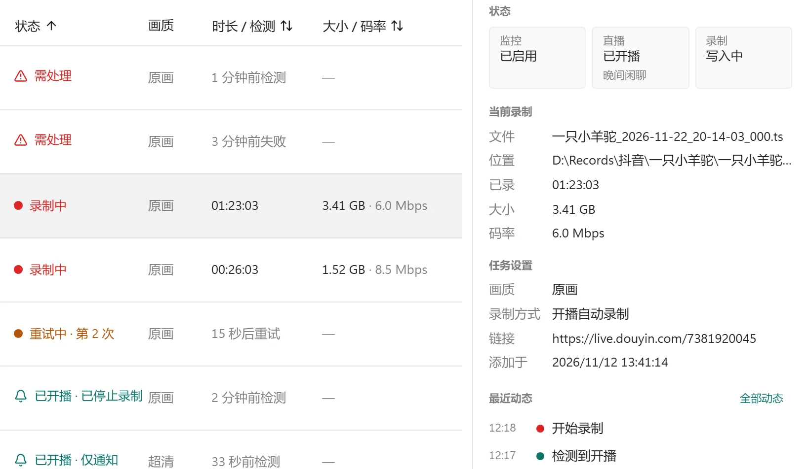
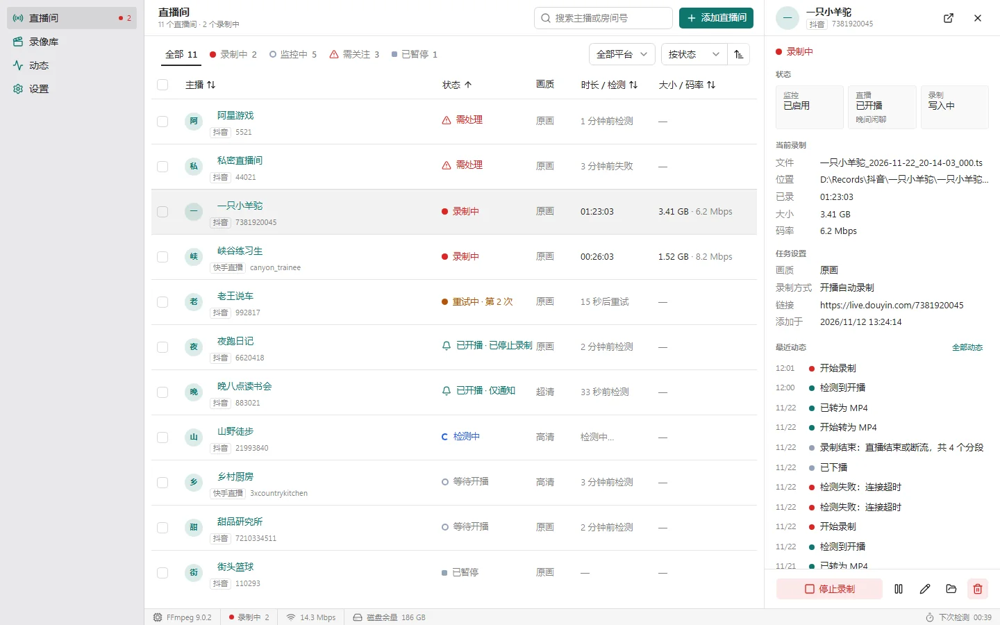
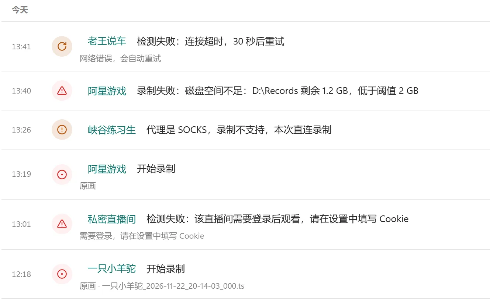
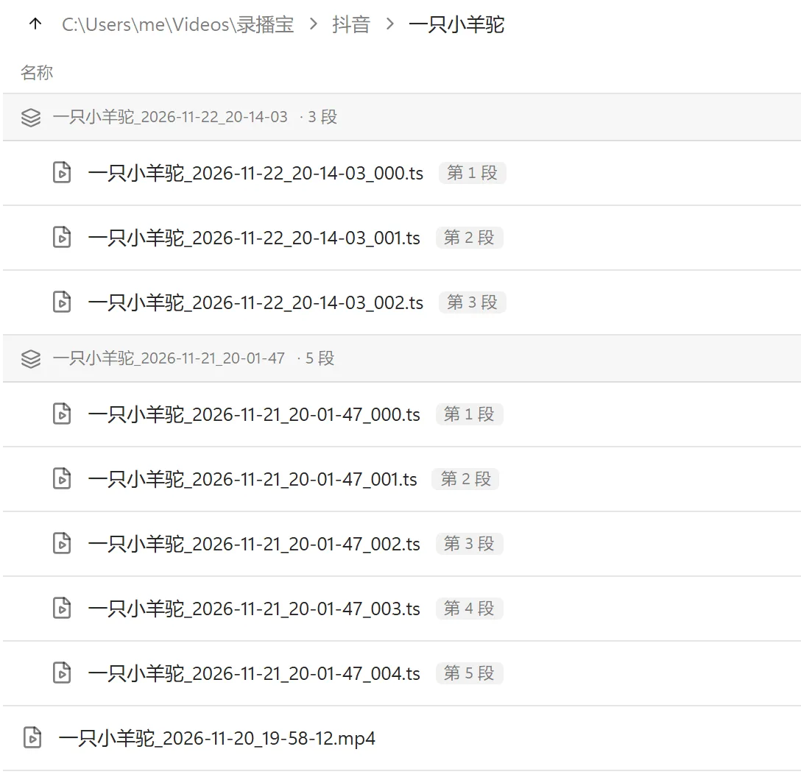
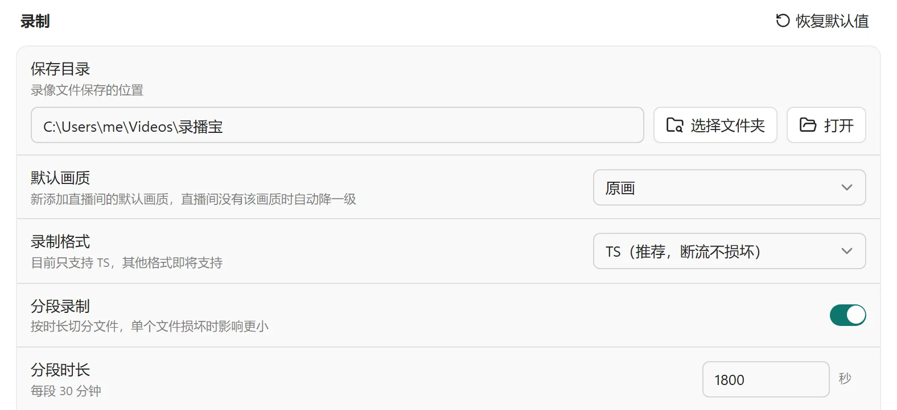

开播就录，状态一眼看清
按设定间隔检测开播，断流后重新检测、接着录。哪个直播间在录、在等还是出了错，看状态列和右侧详情就知道。


按设定间隔检测开播，断流后重新检测、接着录。哪个直播间在录、在等还是出了错，看状态列和右侧详情就知道。

动态页按时间记下开播、录制和出错。关掉窗口收进托盘照常录制，开播和失败会发系统通知。

按 TS 分段写入，断流也不丢已录部分；录完转成 MP4，失败时原文件不动。录像只存在你选的目录。

首次启动时在后台下载并校验 FFmpeg，优先国内源。五档画质、分段、代理和 Cookie 都在设置里，改完自动保存；新版本在应用内更新。

正在获取最新版本…
即将发布
首个公测版正在准备中，发布后可以在这里下载。也可以到 GitHub Releases 查看。
暂时获取不到版本信息
下面的按钮仍会下载最新版本；如果打不开，请到 GitHub Releases 下载。
录播宝是电脑软件，请在 Windows、Mac 或 Linux 电脑上打开本页下载。
Windows 10 / 11 · x64
首次运行可能出现 SmartScreen 提示，见首次打开。
macOS 10.15 及以后 · Apple 芯片 / Intel
一键安装（推荐），在「终端」里运行：
curl -fsSL https://lubobao.xiaofany.com/install.sh | sh自动选对芯片版本，校验后装进「应用程序」，打开时不会被拦截。
或下载 dmg：
不确定芯片：苹果菜单 →「关于本机」，写 Apple M1、M2 等的选 Apple 芯片。
桌面版 · x64
没有图形界面的服务器请用下面的命令行版。
安装包由 xiaofany.com 提供。备用下载：GitHub Releases（附 SHA256SUMS.txt）。
lubobao-cli 是无界面版本，和桌面版用同一套录制核心，适合 Linux 服务器、NAS 和容器，支持 x64 与 arm64。
一键安装
curl -fsSL https://lubobao.xiaofany.com/install-cli.sh | sh按架构下载、校验后装到 /usr/local/bin，再运行 lubobao-cli run。
Docker（amd64 / arm64，内置 FFmpeg）
docker run -d --name lubobao --restart unless-stopped --stop-timeout 45 \
-e TZ=Asia/Shanghai \
-v lubobao-data:/data -v lubobao-recordings:/recordings \
ghcr.io/seansongx/lubobao:latest
docker exec lubobao lubobao-cli add https://live.douyin.com/123456停止时用 docker stop -t 45 给录制留出收尾时间。更多用法见命令行文档。
安装包暂未购买代码签名证书，系统第一次打开时会提示来源未知，按下面的步骤放行一次即可。
lubobao_…_windows_x64-setup.exe，再点「仍要运行」。用一键安装命令装的不会被拦截。手动安装时，先把「录播宝」拖进「应用程序」，然后：
提示「“录播宝”已损坏，无法打开」时，在「终端」里运行下面的命令后重新打开：
xattr -dr com.apple.quarantine /Applications/录播宝.appAppImage 先加上可执行权限再运行；提示缺少 FUSE 时，Ubuntu 22.04 装 libfuse2，24.04 装 libfuse2t64。
chmod +x lubobao_*_linux_amd64.AppImage
./lubobao_*_linux_amd64.AppImagedeb 在下载目录里用 apt 安装，依赖会一并装好：
sudo apt install ./lubobao_*_linux_amd64.deb